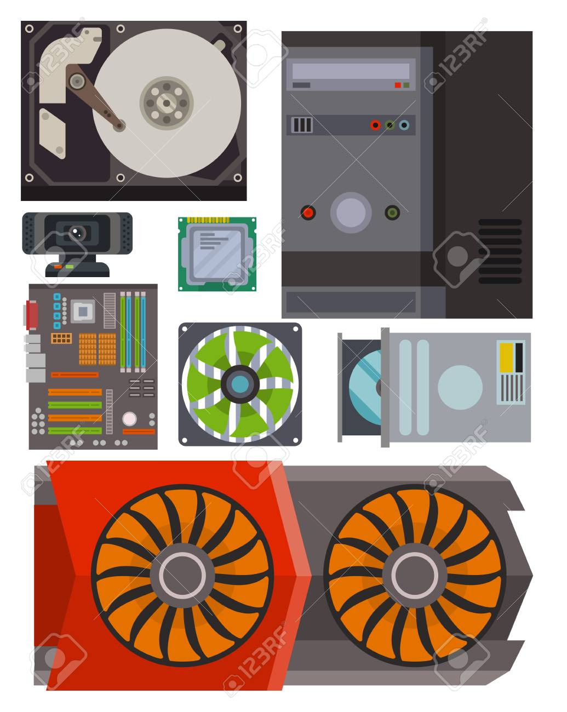
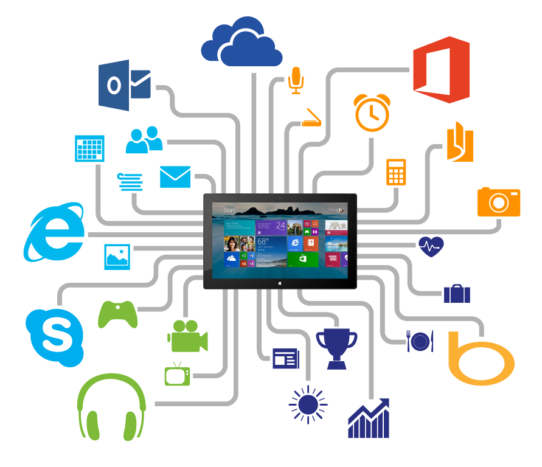

Utilidades de Windows
Windows es un sistema operativo ampliamente utilizado que ofrece una variedad de utilidades y características. Windows es útil por varias razones, lo que lo ha convertido en uno de los sistemas operativos más populares en el mundo. Aquí hay algunas de las razones por las cuales Windows es ampliamente utilizado y considerado útil:
Windows es compatible con una amplia variedad de aplicaciones y software, incluyendo software de productividad, juegos, aplicaciones empresariales y más. Esto facilita a los usuarios encontrar y utilizar software para satisfacer sus necesidades específicas.
Windows ha sido diseñado con una interfaz de usuario amigable que es fácil de aprender y usar. Esto lo hace accesible para una amplia gama de usuarios, desde principiantes hasta usuarios avanzados.

Debido a su popularidad, Windows cuenta con una gran comunidad de usuarios, lo que significa que puedes encontrar una amplia variedad de recursos en línea, tutoriales y soporte técnico en caso de necesitar ayuda.
Windows es compatible con una amplia gama de hardware, lo que te permite elegir entre una variedad de fabricantes y configuraciones de computadoras que se adapten a tus necesidades y presupuesto.

Windows te permite personalizar la apariencia y el comportamiento de tu sistema operativo, lo que te permite ajustarlo a tus preferencias personales.

Si utilizas otros servicios de Microsoft, como Office 365, OneDrive, o Azure, Windows se integra de manera fluida con estos servicios, lo que facilita la colaboración y el acceso a tus archivos y datos.
